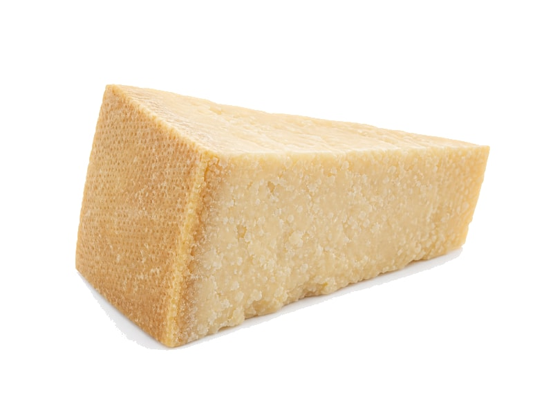

Sery
Ser Parmezan
Ser Parmezan: 38 g białka, 431 kcal, 4.1 g węglowodanów i 29 g tłuszczu na 100 g. Kategoria: Sery.
Kalorie431 kcalna 100 g
Białko / proteiny38 g
Węglowodany4.1 g
Tłuszcz29 g
Cena (szac.)~8,00 złza 100 g
Ceny zaktualizowano: maj 2026 (szacunek — ceny w popularnych supermarketach)
Porcja: łyżka (10g)
| Kalorie | 43 kcal |
|---|---|
| Białko | 3.8 g |
| Węglowodany | 0.4 g |
| Tłuszcz | 2.9 g |
| Cena (szac.) | ~0,80 zł |
Szczegółowe składniki odżywcze na 100 g
| Wartość energetyczna (kalorie) | 431 kcal |
|---|---|
| Białko (proteiny) | 38 g |
| Węglowodany | 4.1 g |
| Tłuszcz | 29 g |
| Tłuszcze nasycone | 17 g |
| Tłuszcze nienasycone | 12 g |
| Witaminy i minerały | Potężna dawka Wapnia, Potas, Magnez |
| Współczynnik kcal / 1 g białka | 11.3 |
| Cena produktu (szac. za 100 g) | ~8,00 zł |
| Cena za 100 g białka (szac.) | ~21,05 zł |